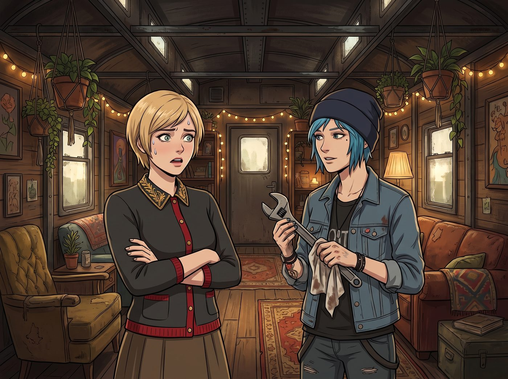
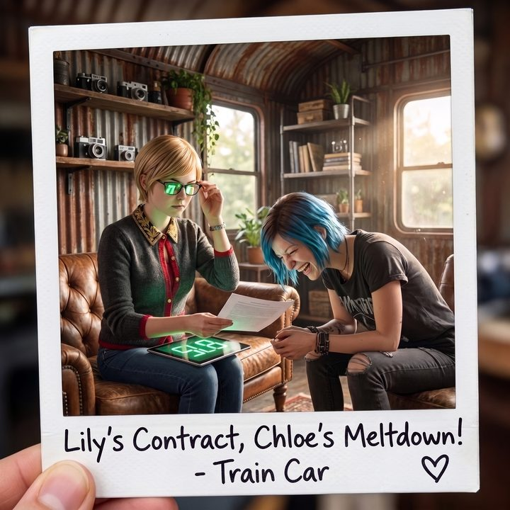

反向帶貨


對於身處邊緣地帶的二號車廂來說，「小賺一筆快錢」和「真正火出圈成為全美公眾人物」完全是兩碼事。
「如果我的臉出現在西雅圖市中心的巨幅廣告牌上，」Victoria 抱著雙臂，語氣裡透著真正的恐慌，「不出三天，Chase 家族的信託律師和那些紐約的社交名媛就會順藤摸瓜找到這個廢鐵營地。到時候我的獨立藝術家生涯就徹底完蛋了。」
「老娘也是。」Chloe 擦著扳手，破天荒地跟 Victoria 站在了同一條戰線上，「阿卡迪亞灣的警察局檔案裡可能還有我的尋釁滋事記錄。要是我被幾百萬人圍觀，哪天在路上隨便踩個油門都要被網暴。我們必須把這火掐滅在搖籃裡。」
擺脫這個麻煩的唯一合約出口，就是讓下一個找上門的贊助商「主動退錢解約」。
這次送上門的冤大頭是一家主打「中產階級都市精緻露營」的高端戶外保溫杯品牌，開出了八千美元的高價，合約條款只有三條：展示保溫杯、念出「享受純粹自然之美」的口號、時長滿 60 秒。
Lily 拿著紅筆核對完條款，推了推圓框眼鏡，給出了戰術評估：「在法律框架內，只要我們嚴格覆蓋了這三條硬性要求，就屬於完全履約。至於出鏡者的演繹風格、審美傾向以及附帶道具，合約中並未做排他性限制。如果他們的品牌公關部因『調性嚴重不符』主動提出終止合作，根據第 8 條，我們不僅不需要支付違約金，還能保留 50% 的預付款。」
「很好。」Victoria 冷笑了一聲，「那就給這群自命不凡的中產階級來一點小小的精神震撼。」
拍攝當天，Max 架好了相機，滿臉憋笑。
鏡頭開機。
畫面一開始，Chloe 坐在一個滿是油污的油桶上，手裡拿著那個原本噴塗著精緻莫蘭迪綠色、售價 68 美元的中產保溫杯。
但此刻，這個杯子上被 Chloe 用黑色油性筆和噴漆，密密麻麻地畫滿了扭曲的滴血骷髏頭、龐克反戰標誌，以及用加粗字體寫著的「FUCK CAPITALISM」和「THIS CUP IS TRASH」。
「嗨，都市工蜂們。」Chloe 面無表情，用一口濃重的街頭菸酒嗓對著鏡頭念稿，「這玩意兒是某個牌子的保溫杯。據說能讓你們在辦公室格子間裡……」她極度嫌棄地扯著嘴角，「……享受純粹自然之美。」
說完，她甚至沒拿杯子喝水，而是直接用那隻滿是骷髏塗鴉的保溫杯，在工坊生鏽的鋼管上當榔頭敲了兩下，發出刺耳的金屬撞擊聲。
緊接著，鏡頭切給了坐在旁邊天鵝絨折疊椅上的 Victoria。
按照常理，這時應該是另一位出鏡者展示產品的保溫效果。但 Victoria 連碰都沒碰金主爸爸的樣品。
只見她優雅地翹著二郎腿，戴著黑色蕾絲手套，手裡捧著一個完全由純銀鍛造、鑲嵌著手工黑曜石、雕刻著巴洛克花紋的復古隨行壺。那根本不是什麼戶外運動水杯，而是她在巴黎古董拍賣會上以四位數美金拍下的私人訂製古董。
「老實說，我不懂為什麼有人會買鋁合金壓鑄的工業流水線垃圾。」Victoria 揚起下巴，用鼻孔對著鏡頭，眼神裡充滿了老錢對暴發戶的純粹蔑視，「但既然合約規定了，那我就勉為其難地承認，旁邊那個被塗鴉毀掉的杯子，確實能讓底層人民『享受純粹自然之美』——如果他們的自然就是二手煙和機油味的話。」
「時間到，61 秒，關鍵詞完全覆蓋。」鏡頭外的 Lily 按下碼錶。
整個影片充斥著流氓氣、階級霸凌、對產品的公然侮辱，以及毫不掩飾的惡意糊弄。
「搞定。」Chloe 把杯子隨手扔進廢鐵堆裡，「只要金主公關沒瞎，今天下午就會發律師函要求我們下架退款，順便把我們拉入全美廣告黑名單。」
Victoria 滿意地理了理頭髮：「完美。體面地砸了自己的飯碗，還白嫖四千美金預付款。」
然而，她們低估了當代網際網路的「受虐傾向」，更低估了品牌公關在流量面前的道德彈性。
影片發布後不到六小時，播放量再次如病毒般穿透了演算法防線。
全網的 Z 世代和反叛年輕人陷入了瘋狂： 「天哪！那個骷髏塗鴉簡直是神作！有人知道那個龐克女孩接不接私人改裝嗎？我願意出兩百塊讓她在我的杯子上寫髒話！」
「右邊那個名媛白眼翻得太真實了！這是我見過最硬核的『反向帶貨』！她們根本不屑於討好我，這才是真正的奢侈品態度！」
「『享受純粹自然之美』那句話念得像在詛咒全世界，太酷了，我立刻下單了一個同款綠色杯子準備回去自己塗鴉！」
更離譜的是，那批原價 68 美元的滯銷莫蘭迪綠保溫杯，在官網上被搶購一空，服務器甚至被擠爆了兩次。
傍晚，二號車廂的大螢幕上響起了 Zoom 會議的請求。
螢幕那頭不是氣急敗壞的法務，而是該品牌年輕的首席行銷長（CMO）。他滿臉通紅，眼神裡燃燒著一種發現了救世主般的狂熱：
「天才！這簡直是後現代反消費主義的殿堂級營銷案例！你們用『破壞產品』和『階級審判』的方式，精準擊中了年輕一代對虛偽中產生活方式的厭倦！
我們總部剛開完緊急董事會，我們決定推翻原有的全部推廣計畫！
我們想邀請兩位簽署為期一年的全線品牌代言人合約——六位數的代言費！我們甚至打算推出聯名款：由 Price 小姐設計的『骷髏暴動限量版』，以及由 Chase 小姐背書的『名媛冷血純黑版』！」
會議切斷了。
二號車廂裡死一般的寂靜。
Victoria 手裡的氣泡水杯差點滑落到地上，臉色煞白：「六……六位數？全線代言？那豈不是整個第五大道的旗艦店櫥窗上都要貼我的照片？！」
Chloe 呆滯地看著天花板，叼在嘴裡的菸頭掉在褲子上燙了個洞都渾然不覺：「我只是想讓他們滾蛋……為什麼這群有錢人的腦子全都被驢踢了？他們花十萬美金，就是為了讓我當著全美國人的面罵他們是賤骨頭？！」
「根據目前的商業反饋模型，」Lily 推了推眼鏡，平靜地調出代言合約的法務細則，鏡片上反射著六位數金額的刺眼綠光，「在這個極度荒誕的注意力經濟時代，您們越是試圖自毀前程，在大眾眼裡就越顯得『真實且不可替代』。
如果兩位學姐現在拒絕這份合約，我們將錯過營地有史以來最大的一筆現金流；但如果接受，您們將正式成為全美頂流反向帶貨巨星。」
沙發上的 Max 已經笑得快要抽筋了。她舉起寶麗來相機，對著鏡頭前兩個原本想擺爛砸飯碗、結果卻被金主爸爸追著硬塞巨款的老錢名媛與街頭太妹，按下了快門。
相紙緩緩吐出，Max 擦著眼角笑出來的眼淚，在背面寫下： 『規則第 86 條：永遠不要試圖用羞辱資方來逃避成名。因為在這個瘋狂的世界上，如果你把一個資本家罵得夠狠、姿態夠傲慢，他們非但不會生氣，反而會端著合同跪在地上，哭著求你代言他們的靈魂。』